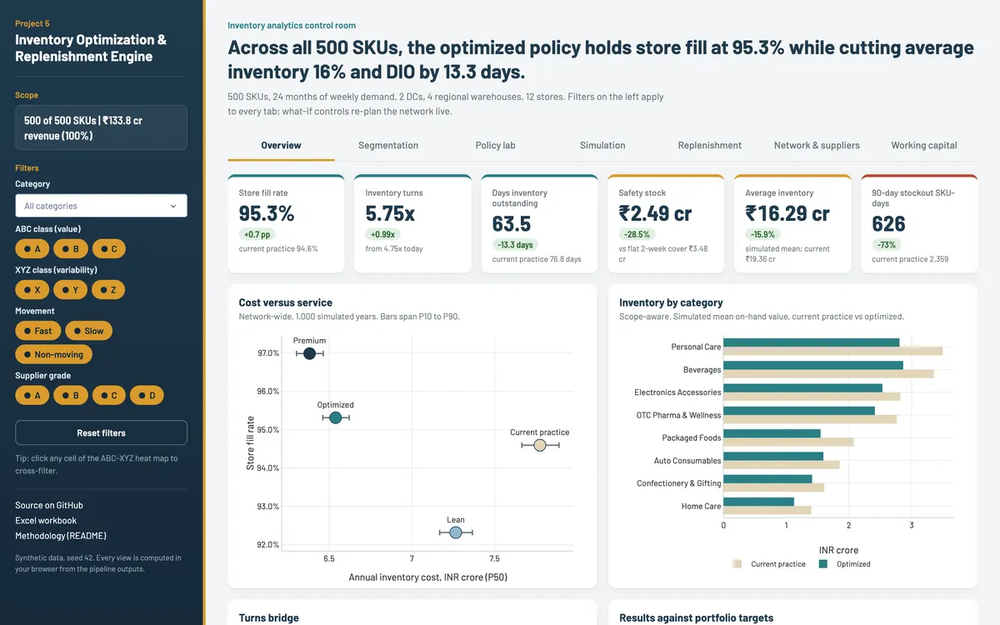
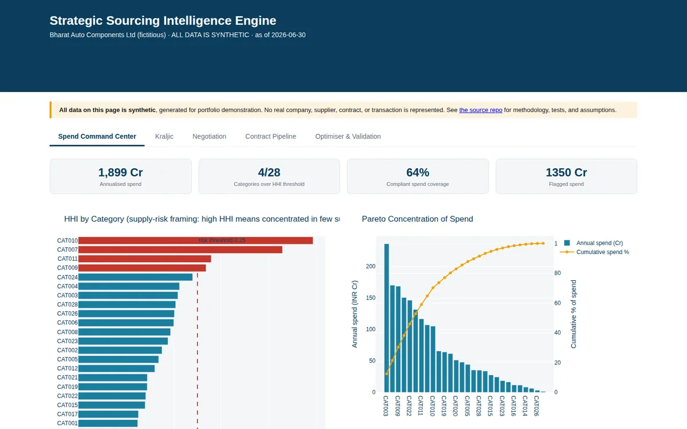
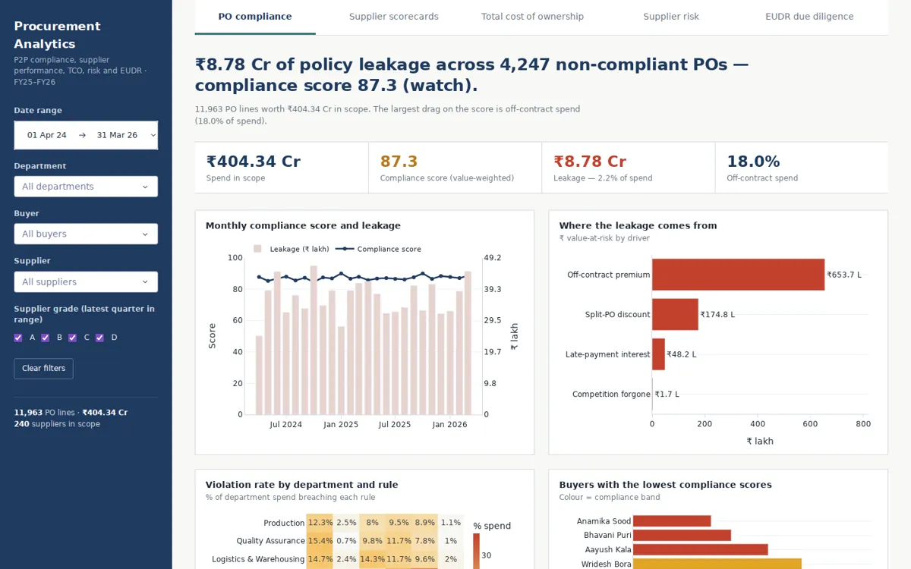
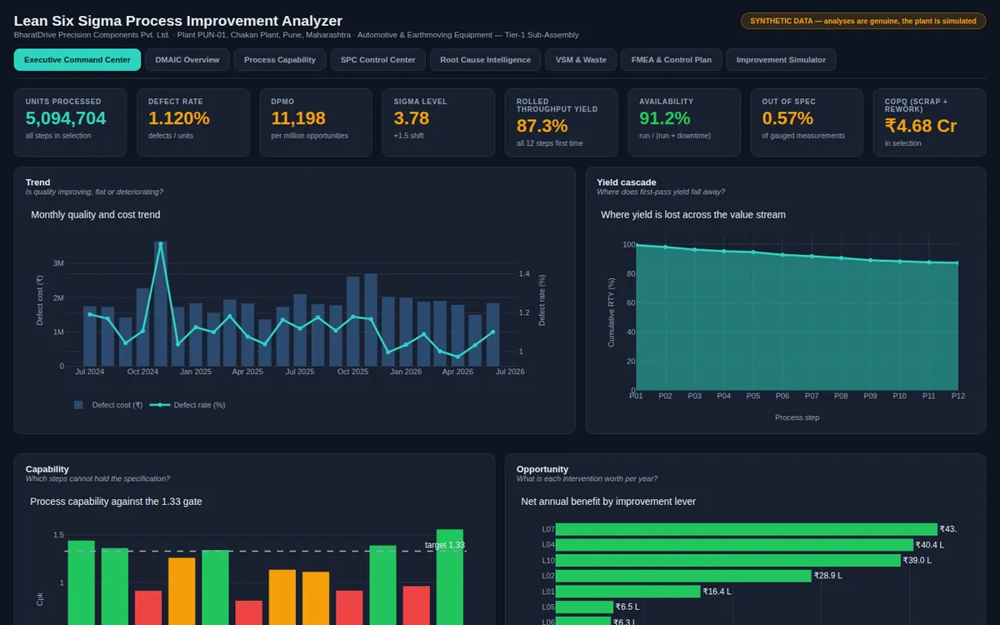

Kushagra Kartikey
Supply Chain & Operations Professional
Delhi, India Open to Relocation
I run supply chain operations and measure every change by its result.
Selected results
-
Gross margin, Ugandan coffee cooperative, as a DHL consultant
40.5%
Up from 21.2%
-
Days Sales Outstanding (DSO), projected, as a DHL consultant
30 days
Down from 70 days
-
Stock availability, Decathlon Sports India
95%+
With 8+ months of targets met
About
Two years across retail operations and supply chain, measured in stock availability, margin and cash.
Delhi, IndiaOpen to relocation
What I work on, across the value chain
-
Plan
- S&OP
- Demand forecasting
- Inventory and replenishment
95%+stock availability, Decathlon
-
Source
- Strategic sourcing
- Procurement
- Vendor negotiation
−15%vendor costs, BWF event
-
Make
- Lean Six Sigma
- Quality assurance
- Cost and margin
40.5%gross margin from 21.2%, DHL
-
Deliver
- Logistics and 3PL
- Warehouse management
- Trade compliance
−30%inbound delays, Decathlon
-
Enable
- Working capital
- Analytics and dashboards
- Supply chain traceability
30 daysDSO from 70, projected, DHL
Sectors I can serve
- Retail
- E-commerce
- FMCG
- Pharma
- Manufacturing
- Automotive
- Capital goods
- Aerospace
- Logistics and 3PL
- Warehousing
- Trade and exports
- Agri and food
- Consulting
- Technology
- Events and hospitality
- Sustainability
Experience
-
DHL
SME Business Consultant (GBSN Fellow)
Advising a Ugandan coffee cooperative on cost, cash, export capacity and EU compliance.
-
Gross margin
40.5%
From 21.2%, after a rebuilt COGS model
-
DSO, projected
30 days
From 70 days, through order-to-cash modelling
-
Liquidity released, projected
~USD 35K
Cash freed from receivables
Capacity roadmap. 2,000 smallholder farms, washing stations from 3 to 6, and 20 export containers (384 MT) a year to the EU. - Traceability, proposed. A framework for the EU Deforestation Regulation (EUDR) and human rights and environmental due diligence (HREDD) across 1,500 supply nodes.
- Export. Incoterms and export documentation for direct EU market access.
- Quality. Post-harvest QA SOPs with a 12.5% moisture threshold.
- Capex. A volume-gated case of about USD 85K to capture a $0.30/lb origin premium.
-
-
Decathlon Sports India
Department Manager
Racquet and team sports: stock, replenishment, merchandising and omnichannel ordering.
-
Stock availability
95%+
Stock targets and replenishment in the in-house WMS
-
Monthly targets met
8+ months
100% planogram compliance
-
Inbound delays
−30%
-
Omnichannel order errors
−35%
-
KPI analysis time
−40%
-
Customer satisfaction
96%
-
Digital sales, month over month
+10%
-
-
BWF (Badminton World Federation)
Event Coordinator, Transport & Accommodation
World Tour Super 300 event
Airport, hotel and venue logistics for players, officials and VIPs across 7 functional teams.
-
Participants on transfers
480+
Airport, hotel and venue runs with 3PL transport partners
-
On-time transport
95%
-
Participants in 12 hotels
450+
-
Lodging satisfaction
97%
-
Vendor costs, 12+ vendors
−15%
-
-
Earlier roles
- IIDE – The Digital SchoolVirtual Intern, Remote –
- HCLTechTechnical Support Executive, Madurai –
Projects
Five analytics builds, each on a real industry problem, with a live dashboard. All run on synthetic data generated for demonstration.
-
Planning
FMCG, retail, e-commerce and 3PL
S&OP Intelligence System
S&OP failures cost FMCG and retail 2–5% of revenue a year. Four forecasting models feed one governed, capacity-checked plan for 500 SKUs.
- Forecast error (WAPE) at sign-off
- 7.42%
- Revenue at risk flagged
- ₹5.70 Cr
- SKUs flagged red-risk
- 162
Modelled on synthetic data
Built with
-

Inventory
Retail and distribution
Inventory Optimization & Replenishment Engine
Blanket two-week buffers starve some SKUs and bloat others. Here buffers follow forecast error across 500 SKUs, 2 DCs, 4 warehouses and 12 stores, tested over 1,000 Monte Carlo runs.
- Working capital released
- ₹6.00 Cr
- Stockout SKU-days
- −73%
- Safety stock, service held
- −28.5%
Modelled on synthetic data
Built with
-

Sourcing
Automotive, Tier-1 components
Strategic Sourcing Intelligence Engine
Where can an auto-component maker save, and where is it exposed? Spend cube, Kraljic matrix, supplier concentration and a five-rule compliance engine across 280 suppliers.
- Spend analysed
- ₹1,899 Cr
- Expected savings a year
- ₹45.4 Cr
- Categories at supply risk
- 4 of 28
Modelled on synthetic data
Built with
-

Procurement
Diversified manufacturing
Procurement Analytics
Bought-in goods and services make up 60–70% of product cost, so a 2% saving is worth about 1% of margin. Compliance, total cost of ownership and supplier-failure prediction across 11,963 purchase orders.
- Policy leakage found
- ₹8.78 Cr
- Hidden cost above price
- 12.2%
- Supplier failures flagged early
- 13 of 15
Modelled on synthetic data
Built with
-

Quality
Automotive and earthmoving parts
Lean Six Sigma Process Improvement Analyzer
Poor quality costs the plant ₹6.32 Cr a year, 11.1% of production value. DMAIC on 317,863 production records: control charts, capability, FMEA and root-cause ranking.
- Sigma level, up from 3.78
- 4.04
- Payback
- 8.0 months
- Net benefit a year
- ₹1.94 Cr
Modelled on synthetic data
Built with
Skills & tools
Operations
- Sales and Operations Planning (S&OP)
- Demand forecasting
- Inventory management
- Strategic sourcing
- Procurement
- Logistics
- Trade compliance
- Working-capital management
- Lean Six Sigma
- Stakeholder management
Tools
- SAP
- Warehouse Management Systems (WMS)
- Microsoft Excel
- Power BI
- Tableau
- MySQL
- Python
- Robotic Process Automation (RPA)
Business strategy
Four ways I approach an operations problem, each with the result from my own work.
-
Cost strategy and sourcing
Start from the cost structure, then negotiate or reallocate where the analysis shows leverage.
In my work21.2% → 40.5%Gross margin, after a rebuilt COGS model
-
Working-capital improvement
Cash tied up in receivables and stock is cash the business cannot use.
In my work70 → 30 daysDSO, projected, releasing about USD 35K
-
Traceability and compliance
EU buyers need plot-level evidence, so export readiness depends on traceability as much as on documents.
In my work1,500Supply nodes in a proposed EUDR and HREDD framework
-
Volume-gated investment decisions
Commit capital in stages tied to confirmed volume, utilisation and price.
In my work~USD 85KCapex case for in-house processing, volume-gated
Industries
Sixteen sectors in four groups, each with the role, project or certificate behind it.
Consumer and retail
Retail and sporting goods
Department Manager at Decathlon
E-commerce and omnichannel
10% month-over-month digital sales growth
FMCG and consumer goods
S&OP and inventory builds across 500 SKUs
Pharma and healthcare
OTC pharma lines in the inventory build
Industrial and manufacturing
Manufacturing
Lean Six Sigma build; Six Sigma Black Belt
Automotive and auto components
Sourcing, procurement and Six Sigma builds
Engineering and capital goods
Six Sigma build for earthmoving sub-assemblies
Aerospace and aviation
Airbus Supply Chain Specialist certificate
Trade and logistics
Logistics, freight and 3PL
3PL transport for 480+ participants
Warehousing and distribution
In-house WMS; 2 DCs and 4 warehouses modelled
International trade and exports
Incoterms and direct EU market access
Agri-commodities and food
Coffee cooperative in Uganda
Services and sustainability
Consulting and analytics
SME consulting with DHL; five live dashboards
Technology and IT services
Part-requirement predictions at HCLTech
Events and hospitality
450+ participants across 12 hotels
Sustainability and compliance
EUDR and HREDD framework, proposed
Education & credentials
-
2025 – 2027
MBA, Operations & Supply Chain Management
Universal AI University, Mumbai
-
2026 – 2027
MBA, International Business
University of Economics – Varna, Bulgaria
-
2023 – 2026
Bachelor of Computer Applications (BCA)
Manipal University Jaipur
-
Leadership
Board Member, Universal Consulting Group
Universal AI University, Mumbai
-
Publication, 2022
Pace Gen: Connecting Sports & Technology
Research paper, Paper ID: CEFT20164
Certifications
- Six Sigma Black BeltKennesaw State University (opens in a new tab)
- Supply Chain LogisticsRutgers University (opens in a new tab)
- Airbus Supply Chain SpecialistAirbus Beyond (opens in a new tab)
- Project Management EssentialsHoward University School of Business (opens in a new tab)
- Operations and Process ManagementIllinois Institute of Technology (opens in a new tab)
- Google Cloud Data Analytics Professional CertificateGoogle (opens in a new tab)
- Google IT SupportGoogle (opens in a new tab)
- SAP Professional FundamentalsSAP (opens in a new tab)
- Excel Skills for Business: AdvancedMacquarie University (opens in a new tab)
Contact
Working on planning, sourcing, inventory or trade operations? I would like to hear about it.